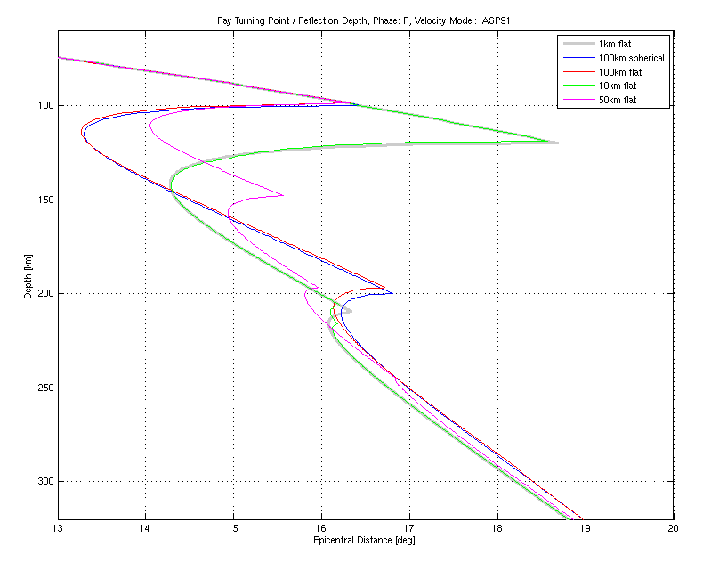

The best way to visualize the spatial extent of travel time triplications due to velocity discontinuities is problably to plot the ray penetration depth (i.e. turning point depth or depth of total reflection, respectively) as function of the covered epicentral distance. This type of plot allows to see directly the distance range covered by the triplication, the number of arrivals observable in a certain distance, and the depths associated with the triplications.
Such plots are generated on the fly by MKTTCURVES for many phases within one model, but can also be generated using MKDEPTHBYDIST. The latter allows for easy comparison of different models.
Several different effects are visible:
|  |
|
Distortion of the triplication of P travel times around 15 deg epicentral distance for various depth samplings (see plot legend). The above picture was generated using the following commands (and some manual adjustment of line thickness and color) mkdepthbydist(iasp91_1km,0,0.01,'P'); [dist,depth]=mkdepthbydist(iasp91_1km,0,0.01,'P'); hold on [dist,depth]=mkdepthbydist(iasp91_100km_sph,0,0.01,'P'); plot(dist,depth,'b-'); [dist,depth]=mkdepthbydist(iasp91_100km,0,0.01,'P'); plot(dist,depth,'r-'); [dist,depth]=mkdepthbydist(iasp91_10km,0,0.01,'P'); plot(dist,depth,'g-'); [dist,depth]=mkdepthbydist(iasp91_50km,0,0.01,'P'); plot(dist,depth,'m-'); hold off legend('1km flat','100km spherical','100km flat','10km flat','50km flat'); |
The distortion of spatial extent of the triplications is strongest for the mos crude models (100km sampling), and the difference between spherical-equidistant and flat-earth-equidistant depth sampling is somewhat second-order. In these cases, the associated depth also deviates most from the true depths.
Spurious triplications appear also for fine samplings, but their shape depends very much on the sampling interval, or, more precisely, on the wavenumber of the sampling. On a local scale, a slight modification of the sampling distance essentially shifts the samples and thus provides slightly different approximations of the velocity gradient and thus the triplications. A doubling of the wavenumber, on the other hand, leaves the samples where they are but adds new ones. By scanning through a range of sampling distances, a quasi-periodic emergence and vanishing of spurious triplications occurs.